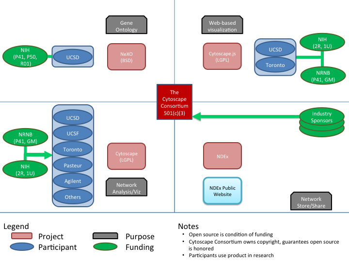

Enabling biological research via open software and public resources.
The Cytoscape Consortium is an independent 501(c)(3) not-for-profit organization which promotes the development and distribution of open source bioinformatic software related to biological networks and which provides public resources to enable the exchange and use of biological networks and related information.
The Cytoscape Consortium holds the intellectual property rights of the following software:
The primary contributors and sources of funding for these projects are outlined below in Figure 1:
 D&B (DUNS) number: 022073749